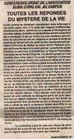

| Panorama d'événements |
[Lomé] Au début du mois de mars, les centres du Togo et du Bénin et un messager Guan Yin ont entamé une tournée d'une semaine pour révéler les beautés cachées de l'Afrique de l'Ouest. Aucun séminaire n'avait jamais été organisé dans cette région, pourtant grâce à l'incroyable arrangement de Maître et au soutien dévoué des initiés locaux, tout s'est déroulé sans incident.
A Lomé, un séminaire vidéo s'est tenu à l'Université du Togo et la salle débordait de monde à la recherche de la Vérité. Nombreux sont ceux qui ont dû rester debout pendant la fête de trois heures sur les enseignements de Maître, mais personne n'a quitté la salle. Les auditeurs ont activement participé à l'événement, posant sans cesse des questions pour assouvir leur soif de Vérité spirituelle. Après la session de questions-réponses, tous étaient satisfaits et ont dégusté de légers plats végétariens. Pendant les deux semaines suivantes, de nouveaux intéressés d'Afrique de l'Ouest ont demandé à apprendre la Méthode pratique ou à être initiés.
Au Bénin, deux séminaires ont été organisés en seulement trois jours grâce à l'arrangement bienfaisant de Maître. Le premier a eu lieu à l'Université du Bénin, l'autre dans un célèbre centre d'artistes. Une fois encore, de nombreuses personnes ont demandé à apprendre la Méthode pratique ou à être initiés. Deux cameramen, engagés pour réaliser une vidéo au Bénin, sont également restés pour apprendre la Méthode pratique et ont témoigné beaucoup de respect à Maître. Les questions posées au Bénin étaient très intéressantes d'un point de vue spirituel et pleines d'éloges à l'égard de Maître, peut-être à cause de la visite qu'Elle avait effectuée quelques jours auparavant. Les amis pratiquants souhaitent vivement ouvrir un centre au Bénin pour continuer à partager les enseignements de Maître dans toute l'Afrique de l'Ouest. Le pouvoir de bénédiction ressenti pendant les séminaires était si fort qu'à la fin de chacun d'eux, le public s'est jeté sur tous les documents et la nourriture bénie disponibles. Chacun voulait partager cette méthode précieuse avec leurs proches et leurs amis bien-aimés. Pendant l'enseignement de la Méthode pratique, de nombreuses personnes ont vu Maître s'approcher sur une fleur de lotus ou dans une lumière céleste intense, et entendu des Sons divins ou ont eu d'autres expériences intérieures. L'Afrique de l'Ouest est peut-être matériellement pauvre mais elle est très riche spirituellement.
Séminaire vidéo récemment tenu à Lomé, Togo, Afrique de l'Ouest, présentant une conférence de Maître. 
| Le 8 mars 2000, le journal "TINGO" (Togolais Indépendant D'information) a publié un reportage intitulé "L'Association internationale de Maître Suprême Ching Hai organise un séminaire sur le campus - Toutes les réponses sur le mystère de la vie" (Initialement en français)
| |